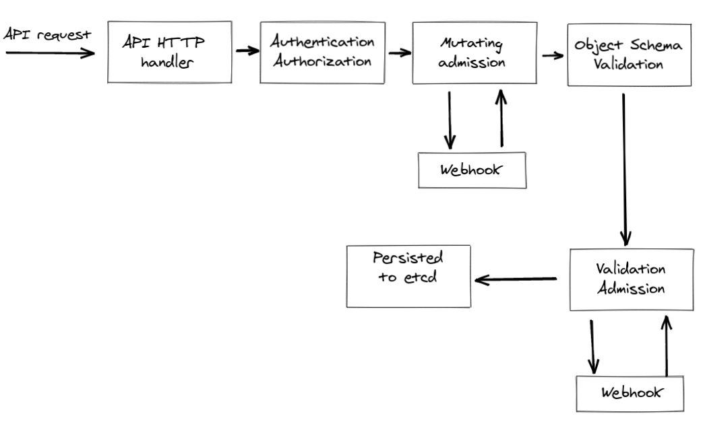

class: center, middle ## Easy injection secret from third-party services with k8s mutation --- ## About me ###Paweł Kopka Site Reliability Engineer Member of 95labs .right[] --- ## Intro #### Admission Controllers - AlwaysPullImages - NamespaceExists - ResourceQuota and many others #### Dynamic Admission Control - MutatingAdmissionWebhook - ValidatingAdmissionWebhook --- ## Flow  --- ## Create certifate for webhook ```bash $ kubectl get csr NAME AGE SIGNERNAME REQUESTOR CONDITION csr-lt69d 2m14s kubernetes.io/kube-apiserver-client-kubelet system:node:kind-control-plane Approved,Issued csr-tvp6j 114s kubernetes.io/kube-apiserver-client-kubelet system:bootstrap:abcdef Approved,Issued mutate-webhook-svc.default 8s kubernetes.io/legacy-unknown kubernetes-admin Approved,Issued ``` --- ## Write webhook ```python import base64 import jsonpatch from flask import Flask, request, jsonify admission_controller = Flask(__name__) @admission_controller.route('/mutate/pods', methods=['POST']) def inject_secrets_webhook(): request_info = request.get_json() containers = request_info['request']['object']['spec']['containers'] containers = update_containers(containers) return admission_response_patch( True, request_info['request']['uid'], "Adding side car", json_patch=jsonpatch.JsonPatch([{"op": "add", "path": container_path, "value": containers}])) ``` --- ## Write webhook ```python def admission_response_patch(allowed, uid, message, json_patch): base64_patch = base64.b64encode(json_patch.to_string().encode("utf-8")).decode("utf-8") return jsonify({"apiVersion": "admission.k8s.io/v1", "kind": "AdmissionReview", "response": {"allowed": allowed, "status": {"message": message}, "uid": uid, "patchType": "JSONPatch", "patch": base64_patch}}) if __name__ == '__main__': admission_controller.run(host='0.0.0.0', port=443, ssl_context=("/certs/cert.pem", "/certs/key.pem")) ``` --- ## Write webhook ```python def update_containers(containers): for container in containers: for env in container['env']: if "secret:" in env['value']: env['value'] = update_secret(env['value']) return containers ``` --- ## Write webhook ```python import hvac # vault -> secret:vault:<path>:<secret_name> # ssm -> secret:ssm:<path> def update_secret(secret): if ":vault:" in secret: try: _, _, path, sercert_name = secret.split(':') vault_secrets = vault_client.secrets.kv.read_secret_version(path=path) secret = vault_secrets['data']['data'][sercert_name] return secret except (KeyError, hvac.exceptions.InvalidPath): return "NOT_FOUND" elif ":ssm:" in secret: try: _, _, path = secret.split(':') secret = mock_ssm[path] return secret except KeyError: return "NOT_FOUND" ``` --- ### Webhook deployment ```yaml --- apiVersion: apps/v1 kind: Deployment metadata: name: mutate-webhook spec: selector: matchLabels: run: mutate-webhook replicas: 1 template: metadata: labels: run: mutate-webhook spec: containers: - name: mutate-webhook image: mutate imagePullPolicy: Never ports: - containerPort: 443 volumeMounts: - name: webhook-certs mountPath: /certs readOnly: true volumes: - name: webhook-certs secret: secretName: mutate-webhook-secret ``` --- ### Webhook service ```yaml --- apiVersion: v1 kind: Service metadata: name: mutate-webhook-svc labels: run: mutate-webhook spec: ports: - port: 443 protocol: TCP selector: run: mutate-webhook ``` --- ### Create mutate webhook in k8s ```yaml --- apiVersion: admissionregistration.k8s.io/v1 kind: MutatingWebhookConfiguration metadata: name: mutating-webhook namespace: test webhooks: - name: test.mutate.com failurePolicy: Fail admissionReviewVersions: ["v1"] sideEffects: None clientConfig: service: name: mutate-webhook-svc namespace: default path: /mutate/pods caBundle: LS0tLS1.....tLQo= rules: - apiGroups: - "*" resources: - "pods" apiVersions: ["v1"] operations: - CREATE ``` --- ### Create mutate webhook in k8s ```bash $ kubectl get MutatingWebhookConfiguration NAME WEBHOOKS AGE mutating-webhook 1 3s ``` --- ### Create mutate webhook in k8s ```bash $ kubectl get MutatingWebhookConfiguration NAME WEBHOOKS AGE mutating-webhook 1 3s ``` --- ### Test ```yaml apiVersion: v1 kind: Pod metadata: name: box labels: app: box spec: containers: - image: bash imagePullPolicy: IfNotPresent command: [ "echo" ] args: [ "Vault: $(VAULT_PASSWORD) AWS_SSM: $(SSM_PASSWORD)"] name: box env: - name: VAULT_PASSWORD value: "secret:vault:test/pass:password" - name: SSM_PASSWORD value: "secret:ssm:password" restartPolicy: Always ``` --- ### Test ```bash $ kubectl logs box Vault: admina123 AWS_SSM: misiek123 ``` --- ### DEMO